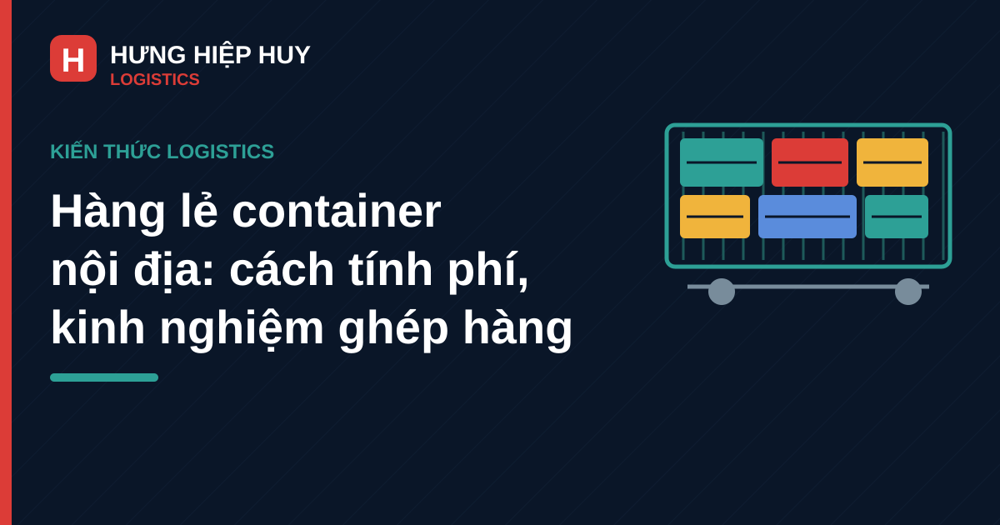

Hàng lẻ container nội địa: khi nào nên ghép hàng, cách tính phí và kinh nghiệm thực tế

Không phải lô hàng nào cũng đủ đầy một container. Với nhiều doanh nghiệp nhỏ, shop bán hàng liên tỉnh hay nhà phân phối nhập hàng theo đợt, mỗi lần chỉ có vài khối hoặc vài trăm cân hàng — thuê nguyên một container là lãng phí, gửi xe tải lẻ lại khó kiểm soát an toàn và chi phí. Đó là lý do dịch vụ gửi hàng lẻ bằng container (hàng ghép, hay còn gọi là LCL — Less than Container Load) ra đời: nhiều chủ hàng cùng chia sẻ một container, mỗi người chỉ trả phần không gian mình dùng.
Bài viết giải thích rõ hàng lẻ khác hàng nguyên container ở điểm nào, khi nào nên ghép hàng, cách tính phí gửi hàng lẻ bằng container nội địa và những kinh nghiệm thực tế để tránh phát sinh không đáng có.
1. Hàng lẻ (LCL) và hàng nguyên container (FCL): khác nhau thế nào?
Hàng nguyên container (FCL — Full Container Load): chủ hàng thuê trọn một container (thường là cont 20ft hoặc 40ft) cho riêng lô hàng của mình. Chủ hàng tự đóng hàng, tự niêm phong (kẹp seal), xe chạy thẳng từ kho gửi đến kho nhận. Xem thêm cách phân biệt container 20ft, 40ft và 40HC để chọn đúng loại.
Hàng lẻ (LCL — Less than Container Load): đơn vị vận chuyển (thường gọi là đơn vị gom hàng) nhận hàng của nhiều chủ hàng khác nhau, tập kết tại kho, đóng chung vào một container rồi vận chuyển. Đến nơi, hàng được dỡ ra (tách hàng) và giao cho từng chủ hàng.
Điểm khác biệt cốt lõi:
| Tiêu chí | Hàng lẻ (LCL) | Hàng nguyên container (FCL) |
|---|---|---|
| Số lượng tối thiểu | Không giới hạn, vài khối cũng gửi được | Thường từ ~15–20 khối trở lên mới hiệu quả |
| Cách tính phí | Theo thể tích (CBM) hoặc trọng lượng, lấy giá trị lớn hơn | Theo container/chuyến |
| Thời gian | Chậm hơn 1–2 ngày (chờ gom đủ hàng, đóng và tách hàng) | Nhanh hơn, chạy thẳng |
| Kiểm soát hàng | Hàng chung cont với hàng của người khác | Chỉ hàng của mình, tự niêm phong |
| Phù hợp với | Lô nhỏ, gửi định kỳ, hàng không quá gấp | Lô lớn, hàng gấp, hàng giá trị cao |
2. Khi nào nên ghép hàng lẻ, khi nào nên đi nguyên container?
Nguyên tắc thực tế rất đơn giản: so sánh chi phí trên mỗi đơn vị hàng.
- Lô hàng dưới ~10–15 khối (hoặc dưới ~5–8 tấn tùy tuyến): ghép hàng lẻ thường rẻ hơn rõ rệt so với thuê nguyên container chạy non tải. Ví dụ lô hàng 5 khối đi tuyến Đà Nẵng – TP.HCM, gửi ghép chỉ trả phí cho 5 khối, thay vì thuê cả container 40ft chỉ để chứa một phần nhỏ.
- Lô hàng từ ~15–20 khối trở lên: nên tính lại phương án nguyên container. Nhiều trường hợp thuê nguyên cont 20ft rẻ hơn tổng phí ghép lẻ, lại nhanh hơn và an toàn hơn vì hàng không phải đóng chung với hàng của người khác.
- Hàng gấp, hàng giá trị cao, hàng dễ vỡ: ưu tiên nguyên container dù số lượng chưa đầy, vì hàng ghép phải chờ gom hàng và qua thêm khâu đóng/tách tại kho — mỗi khâu là một rủi ro và một khoảng trễ.
- Hàng gửi định kỳ, đều đặn: có thể làm việc với đơn vị vận chuyển để có lịch ghép cố định theo tuần, vừa ổn định tiến độ vừa có giá tốt hơn gửi lẻ từng lần.
Lưu ý: ngưỡng "bao nhiêu khối thì nên đi nguyên cont" không cố định — phụ thuộc vào tuyến đường, loại container và thời điểm. Chủ hàng nên yêu cầu báo giá cả hai phương án rồi so sánh trực tiếp, thay vì mặc định chọn một phương án.
3. Cách tính phí gửi hàng lẻ bằng container nội địa
Đây là phần nhiều chủ hàng thắc mắc nhất. Cước hàng lẻ nội địa được tính theo nguyên tắc W/M (Weight or Measurement) — tức lấy giá trị lớn hơn giữa trọng lượng và thể tích, nhân với đơn giá.
Bước 1: Đo và tính thể tích (CBM). Đo dài × rộng × cao của từng kiện hàng (đơn vị mét), cộng tổng: Thể tích (CBM) = Dài (m) × Rộng (m) × Cao (m) × Số kiện.
Bước 2: Cân trọng lượng. Cân tổng trọng lượng lô hàng (đơn vị tấn).
Bước 3: Quy đổi và so sánh. Quy ước phổ biến trong vận chuyển nội địa: 1 tấn = 3 CBM. Đơn vị vận chuyển sẽ quy đổi trọng lượng ra đơn vị thể tích tương đương, rồi lấy giá trị lớn hơn để tính cước:
- Nếu lô hàng nặng nhưng gọn (ví dụ 2 tấn, 3 CBM): tính theo trọng lượng quy đổi.
- Nếu lô hàng nhẹ nhưng cồng kềnh (ví dụ 500 kg, 4 CBM): tính theo thể tích.
Bước 4: Nhân với đơn giá. Cước = Giá trị tính cước (CBM hoặc tấn quy đổi) × Đơn giá mỗi CBM/tấn của tuyến.
Ví dụ minh họa: lô hàng 8 kiện, mỗi kiện 1,2m × 0,8m × 0,6m, tổng cân nặng 900 kg, gửi tuyến Đà Nẵng – Hà Nội:
- Thể tích = 1,2 × 0,8 × 0,6 × 8 = 4,608 CBM
- Trọng lượng = 0,9 tấn, quy đổi theo 1 tấn = 3 CBM → tương đương 2,7 CBM
- Giá trị tính cước = 4,608 (lấy thể tích vì lớn hơn)
- Cước = 4,608 × đơn giá mỗi CBM tuyến Đà Nẵng – Hà Nội
Lưu ý quan trọng: quy ước 1 tấn = 3 CBM là phổ biến nhưng không phải đơn vị nào cũng áp dụng giống nhau — có đơn vị dùng 1 CBM = 1.000 kg, có kho thu phí khai thác riêng. Chủ hàng nên hỏi rõ quy ước tính của đơn vị mình làm việc trước khi chốt giá. Để hiểu sâu hơn về cấu thành giá cước, xem thêm bài cước vận chuyển container nội địa: cách tính và các yếu tố ảnh hưởng.
4. Các loại phí phát sinh cần biết khi gửi hàng lẻ
Ngoài cước vận chuyển chính, hàng lẻ thường có thêm các khoản sau. Hỏi rõ từng khoản ngay từ lúc báo giá sẽ tránh tranh cãi về sau:
- Phí gom hàng / nhận hàng tại kho: phí xe lấy hàng từ kho của bạn về kho tập kết của đơn vị vận chuyển (nếu bạn không tự chở hàng đến kho).
- Phí bốc xếp, đóng/tách hàng tại kho: phí nhân công xếp hàng lên container tại kho đi và dỡ hàng ra tại kho đến. Hàng nặng, hàng cần xe nâng sẽ có mức riêng.
- Phí lưu kho: nếu hàng của bạn đến kho sớm và phải chờ gom đủ chuyến, có thể phát sinh phí lưu kho theo ngày.
- Phí giao hàng tận nơi (nếu có): từ kho đến của đơn vị vận chuyển về địa chỉ người nhận — tính riêng, thường theo quãng đường nội thành.
- Phí bảo hiểm hàng hóa: không bắt buộc nhưng nên mua với hàng giá trị cao, vì hàng ghép qua nhiều khâu trung gian hơn hàng nguyên cont.
- Phí lưu ca xe: khi giao/nhận hàng tại kho của bạn bị chậm (xe phải chờ quá thời gian miễn phí), sẽ tính phí chờ theo giờ hoặc theo ca.
Mẹo thực tế: khi so sánh báo giá giữa các đơn vị, đừng chỉ so đơn giá mỗi CBM. Hãy yêu cầu báo giá trọn gói door-to-door gồm tất cả các phí trên — đơn giá CBM rẻ nhưng phí phát sinh cao có thể khiến tổng chi phí đội lên đáng kể.
5. Quy trình gửi hàng lẻ thực tế, từ báo giá đến nhận hàng
Nắm quy trình giúp chủ hàng chủ động thời gian và chuẩn bị đúng:
- Gửi thông tin, lấy báo giá: cung cấp loại hàng, số kiện, kích thước, trọng lượng ước tính, địa chỉ lấy hàng và địa chỉ giao hàng. Đơn vị vận chuyển báo giá và lịch chuyến ghép gần nhất.
- Chốt booking, hẹn lấy hàng: xác nhận giá, hẹn ngày giờ xe đến lấy hàng hoặc tự chở hàng ra kho tập kết.
- Giao hàng tại kho, kiểm đếm: tại kho, hàng được kiểm đếm, đo đạc lại (số liệu đo thực tế là căn cứ tính cước cuối cùng) và lập biên nhận/phiếu gửi hàng. Chủ hàng nên có mặt hoặc ủy quyền người kiểm tra cùng.
- Đóng container, vận chuyển: hàng được đóng chung container với hàng của các chủ hàng khác, có chằng buộc, phân tách giữa các lô. Xe chạy theo lịch tuyến cố định.
- Tách hàng tại kho đến, giao hàng: đến nơi, container được dỡ, hàng của từng chủ được phân loại và giao theo địa chỉ đã hẹn. Người nhận kiểm tra tình trạng hàng và ký xác nhận.
Tổng thời gian door-to-door của hàng lẻ thường dài hơn hàng nguyên container 1–2 ngày do khâu gom và tách hàng. Với các tuyến từ Đà Nẵng đi các tỉnh, chủ hàng nên dự phòng thêm thời gian này khi lên kế hoạch. Xem thêm quy trình vận chuyển container nội địa từ cảng Đà Nẵng đi các tỉnh để hình dung toàn bộ hành trình.
6. Kinh nghiệm chọn đơn vị vận chuyển hàng lẻ uy tín
Hàng lẻ qua nhiều khâu trung gian nên việc chọn đúng đơn vị càng quan trọng. Một số tiêu chí thực tế:
- Có kho bãi và lịch chuyến cố định: đơn vị có kho tập kết riêng và lịch ghép hàng đều đặn theo tuần sẽ chủ động tiến độ, không để hàng của bạn nằm chờ vô định. Đơn vị có kho bãi container tại Đà Nẵng là lợi thế lớn với hàng đi/đến miền Trung.
- Báo giá minh bạch, tách rõ từng khoản phí: đơn vị uy tín báo giá liệt kê đầy đủ cước chính và các phí phát sinh dự kiến, không báo giá chung chung một con số.
- Có đội xe thực, chạy tuyến thường xuyên: đơn vị sở hữu xe và chạy đều tuyến bạn cần sẽ kiểm soát được tiến độ và xử lý sự cố dọc đường tốt hơn đơn vị chỉ làm trung gian. Tham khảo thêm kinh nghiệm chọn nhà vận chuyển container nội địa.
- Quy trình kiểm đếm, biên nhận rõ ràng: mỗi lần giao/nhận hàng tại kho đều có phiếu ghi số kiện, tình trạng hàng, chữ ký hai bên — đây là căn cứ duy nhất để khiếu nại nếu hàng thiếu hoặc hư hỏng.
- Có chính sách đền bù rõ ràng: hỏi trước mức đền bù khi mất mát, hư hỏng và điều kiện áp dụng, đừng đợi đến khi xảy ra sự cố mới hỏi.
7. 5 lỗi thường gặp khi gửi hàng lẻ lần đầu
- Khai sai kích thước, trọng lượng: số liệu ước chừng khiến báo giá ban đầu thấp hơn thực tế, đến lúc đo lại tại kho thì cước đội lên — gây tranh cãi không đáng có. Nên đo đạc, cân kỹ trước khi gửi báo giá.
- Đóng gói sơ sài: hàng lẻ đóng chung container với hàng của người khác, chịu rung lắc và va chạm nhiều hơn. Hàng dễ vỡ, hàng điện tử cần đóng thùng carton chắc, lót chống sốc và ghi chú "hàng dễ vỡ" rõ ràng. Xem thêm 7 lỗi thường gặp khi đóng hàng vào container.
- Không mua bảo hiểm cho hàng giá trị cao: tiết kiệm một khoản phí nhỏ nhưng gánh rủi ro lớn — đặc biệt với hàng ghép qua nhiều khâu.
- Gửi hàng cấm, hàng hạn chế mà không khai báo: pin lithium, hóa chất, thực phẩm tươi sống có yêu cầu riêng; giấu thông tin có thể khiến cả container bị giữ lại, ảnh hưởng đến hàng của các chủ hàng khác và bạn phải chịu trách nhiệm.
- Không giữ biên nhận, phiếu gửi hàng: mọi khiếu nại về thiếu hàng, hư hỏng đều cần biên nhận lúc giao hàng tại kho làm căn cứ. Chụp ảnh hàng hóa trước khi giao cho đơn vị vận chuyển là thói quen nên có.
8. Kết luận
Gửi hàng lẻ bằng container là giải pháp kinh tế nhất cho các lô hàng không đủ đầy container: chỉ trả đúng phần không gian mình dùng, vẫn được hưởng ưu điểm an toàn của vận chuyển container so với xe tải lẻ. Chìa khóa là nắm rõ cách tính phí theo nguyên tắc W/M, hỏi kỹ mọi khoản phí phát sinh ngay từ đầu, đóng gói cẩn thận và chọn đơn vị có kho bãi, lịch chuyến cố định và quy trình kiểm đếm minh bạch.
Cần báo giá gửi hàng lẻ hoặc nguyên container?
Liên hệ Hưng Hiệp Huy Logistics — Hotline/Zalo: 0901 995 665 — Email: hiepnguyen.hunghiephuy@gmail.com. Gửi thông tin lô hàng để nhận báo giá rõ ràng từng khoản và phương án vận chuyển phù hợp.
Bài viết liên quan: Cước vận chuyển container nội địa: cách tính và các yếu tố ảnh hưởng · Vận chuyển container Bắc – Nam: giá cước & thời gian 2026 · Vận chuyển container nội địa từ cảng Đà Nẵng đi các tỉnh